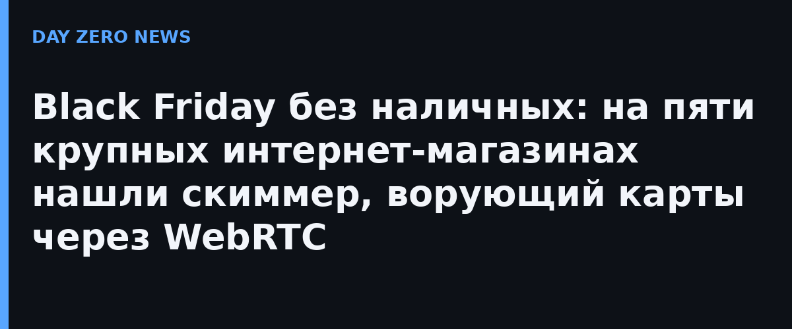

Накануне Black Friday исследователи компании InfoHawk обнаружили вредоносные скрипты на пяти известных интернет-магазинах: lascana.com, shop.samsonite.com, shop.americantourister.com, revolve.com и fwrd.com. Все это крупные американские бренды одежды и багажа, а Revolve и FWRD открывают европейских покупателей в локальный раздел — то есть риск касался не только клиентов из США.
Сам скрипт маскировался под обычный код стороннего подрядчика — виджет поддержки, маркетинговый пиксель или баннер согласий. Такие на профессиональном сайте не редкость и сами по себе не выглядят подозрительно. Но исследователи вживую наблюдали, как на странице оформления заказа lascana.com данные тестовой карты уходят на подконтрольный злоумышленникам домен.
Скрипт перехватывал номер карты, срок действия, защитный код, а также имя, адрес, телефон и e-mail покупателя непосредственно в момент ввода. Подтверждать заказ было не обязательно: данные уходили, даже если оплату отклонили или покупатель в итоге ничего не купил.
Главная хитрость — канал передачи. Вместо привычной отправки HTTP-запросом скрипт использовал WebRTC: технологию прямых peer-to-peer соединений между браузером и сервером, созданную для звонков и видеочатов. Такой трафик не проходит через веб-сервер магазина, не оседает в его логах и легко минует ограничения политики безопасности CSP, которая перекрывает подозрительные отправки. Для специалистов по защите сайта WebRTC — слепая зона: в инфраструктуре он может присутствовать легально, например для онлайн-консультанта.
Отдельных официальных анонсов от самих магазинов нет — Lascana, Samsonite, American Tourister, Revolve и FWRD пресс-релизов не публиковали. Единственный первоисточник — отчет InfoHawk от 27 ноября: там описана схема и подтвержден перехват тестовой карты. Сколько реальных карт успели украсть и сколько сайтов было затронуто, исследователи не знают — и прямо это оговаривают. После уведомлений магазины убрали скрипты 24-25 ноября, еще до распродаж.
Техника, впрочем, не новая: еще в марте 2026 года команда Sansec описывала WebRTC-скиммер, поразивший сайт крупного зарубежного автопроизводителя. Новость в том, что за полгода прием добрался до массового ретейла — в самый разгар сезона распродаж.
Покупателям: заведите отдельную виртуальную карту для покупок в интернете с небольшим лимитом, включите push-уведомления об операциях и на этой неделе просмотрите выписки. Если вы заказывали в перечисленных магазинах в ноябре - риск стоит перепроверить: вместе с номером злоумышленники получали срок действия, CVC, имя и контакты, то есть почти полный комплект для злоупотреблений.
Магазинам: провести ревизию сторонних скриптов в платежной форме, запретить или контролировать исходящие WebRTC-соединения на страницах оформления заказа и помнить - мнимая «безопасность по умолчанию» устарела, а сезон распродаж злоумышленники выбирают осознанно.